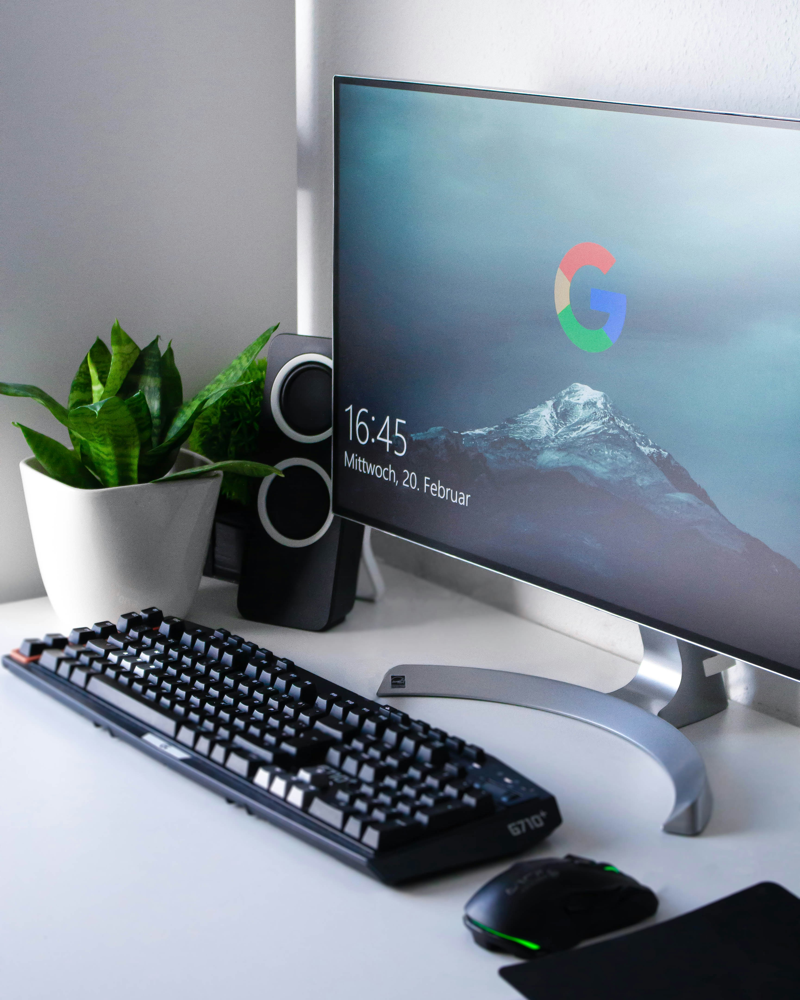
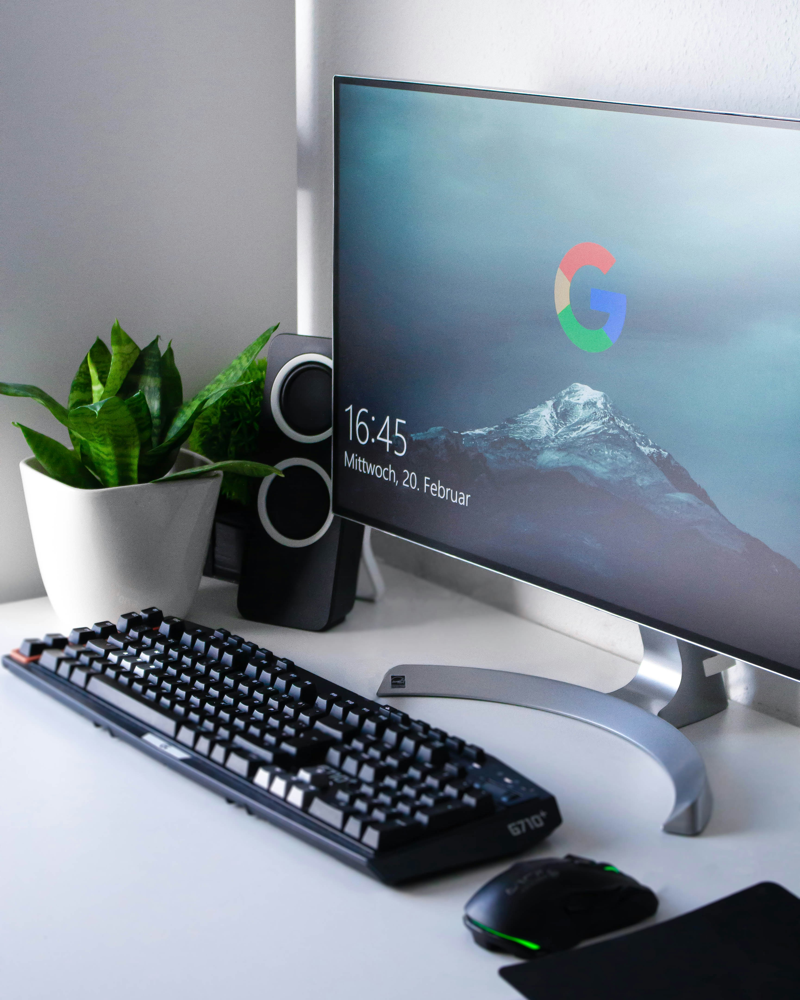

'컴퓨터'(computer)라는 명칭의 유래는 먼저 계산한다는 뜻의 라틴어 '콤푸타레'(computare)에서 유래했다. 이 단어의 어근은 '콤'(com)과 '푸투스'(putus)로 '함께'(com)와 '생각하다'(putus)의 합성어이다. 영어로는 calculate 또는 estimate로 번역되며, '생각을 정리하며 수식을 따라 계산하는 것 또는 계산하는 사람을 의미한다. '컴퓨터'라는 말의 의미는 시대에 따라 변화했다. 과거에는 기계적인 도움의 유무에 관계없이 수학 계산을 수행하는 사람을 가리키는 말로 사용하였다. 현재에는 기계를 의미하는 경우가 더 많지만 여전히 수학 계산하는 사람으로도 사용한다. ODE2 목록에 따르면 1897년에 처음으로 기계적 계산을 수행하는 기계를 일컫는 말로 사용되었다. 1946년까지 여러 수식어가 소개되었는데, 이것들은 여러 종류의 컴퓨터를 구별하기 위한 것들이었다. 이 수식어들은 아날로그, 디지털을 포함하고 있다.
전자회로를 이용하여 자동적으로 계산이나 데이터를 처리하는 기계로 프로그래밍이 가능하다. 입력자료를 받아들여 처리하고 그 정보를 저장하고 검색하여 결과를 출력하는 일을 하며 다른 기계들을 제어(control other machines)하기도 한다. 아날로그형과 디지털형이 있으나 1960년 이후로는 거의 디지털형만이 이용된다. 컴퓨터는 여러 가지 명령어로 구성된 프로그램의 지시에 따라 입력한 데이터를 분석·처리하여, 그 결과를 사용자에게 제공한다. 그러나 컴퓨터가 하나의 업무를 처리하기 위해서는 입력·제어·기억·연산·출력 등의 다섯가지 장치가 서로 밀접하게 연관되어야만 종합적인 기능을 수행할 수 있다.


 
